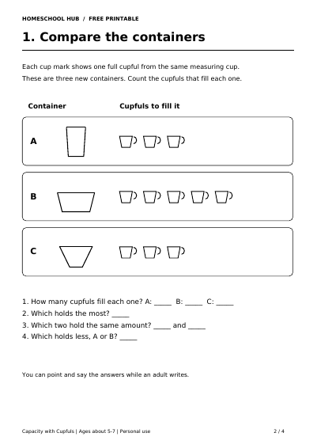

Free printable
Which Holds More? Measure Capacity with Cupfuls
Ages about 5–7
Capacity is how much a container can hold when full. Count pictured cupfuls to work out which container holds more, less or the same amount.
Four A4 pages include a worked example, counting and comparison questions, a fair measuring activity and answers.
Try a 5–10 minute session with a child who can count to six. Print pages 2–3 in black and white. Each mark shows one full cupful. The marks show how many cupfuls fill an empty container.
An adult can read while the child points and answers aloud. Use the same imaginary measuring cup, filled to the same level each time. A pencil is optional and no water is needed.
Practise measuring with equal units in Comparing Lengths or revise counting with Numbers 1–10.
